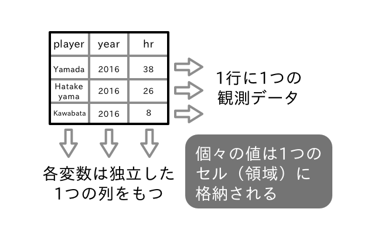
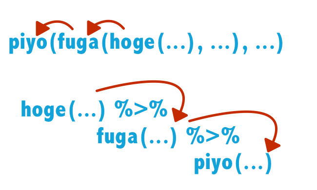

# c()はベクトルを生成する関数
# 以下は3つの数値要素からなるベクトルを生成
c(3, 1, 6)[1] 3 1 6この章は、Rプログラミングの基礎と、近年注目を集めているtidyverseの枠組みを紹介する。すでにRに慣れている読者であれば、本章前半のR基本操作は読み飛ばしても問題がない。一方、後半はtidyverseの導入として、tidyデータという概念を解説し、この枠組みでのデータ読み込み、データ操作、効率的な処理ついて触れる。加えて、tidyverseの根幹にあるtibbleと呼ばれる拡張クラスや、パイプ処理と呼ばれるコード記述について説明する。
ここではオブジェクトの扱い、特にデータ型ついて説明しよう。
プログラミング言語では、データは型で区別され、型ごとに適切な処理が定義されている。Rで頻繁に利用されるデータ型として、論理値 (logical)、数値 (整数型 integerおよび 倍精度小数点型 double)、文字型 (character)の4種類がある。これらは他の要素に分解することのできない原始的な(atomic)データ型である。
# c()はベクトルを生成する関数
# 以下は3つの数値要素からなるベクトルを生成
c(3, 1, 6)[1] 3 1 6ベクトルはc()によって生成されるが、ベクトル内では、要素のデータ型は統一されるという制約がある。もしベクトル内部で複数のデータ型を混在させようとすると、Rはいずれかのデータ型に強制変換を行う。変換はもっとも自由度の高いデータ型で統一される。例えば数値と文字では文字のほうが自由度が高い。文字は数値型として扱えないが、数値の方は文字列として保存することが可能である（必要があればRではなどを使って数値に変換できる）。
x <- c(123, "十二三")
class(x)[1] "character"ここで class() はデータの型を出力する関数である。 データ型の変換はこのように、データ型の扱いやすさによって決定する。データ型の変換の優先順位は柔軟性の低い型から論理型、整数型、倍精度小数点型、文字列の順となる。
Rではオブジェクトに関数を適用する際に自動的に型変換が行われることがある。例えば論理値のTRUEおよびFALSEは、合計を求める関数を適用すると自動的に数値に変換されて処理される。
1L + TRUE[1] 2# FALSEは数値の1以下である
# (正しいのでTRUEが返却される)
FALSE <= 1[1] TRUE# 論理値のTRUE, FALSEは数値として処理され、それぞれ1と0として計算される
sum(c(TRUE, FALSE, 1, TRUE))[1] 3一方でas.numeric()やas.character()といった関数を実行することで、任意のタイミングでデータ型を変換をすることも可能である。これらの関数の多くは as.と変換後のデータ名をつなげた名前で定義されている。
# 明示的に型変換を行う
as.numeric(c(TRUE, FALSE))[1] 1 0as.character(as.numeric(TRUE))[1] "1"Rでは文字や数値、関数など、すべてがオブジェクトである。10や”abc”という数値や文字（リテラルという）、関数c()もまたオブジェクトである。通常オブジェクトには名前がつけられる。cは要素を結合する関数オブジェクトに付けられた名前である。また以下の例ではオブジェクト（リテラル）である3と5を加算した結果のオブジェクトを x という名前で保存している。
# 処理の結果を x として保存する
x <- 3 + 5
# 保存されたオブジェクトを出力する
x[1] 8# オブジェクトに対して処理を加える
x + 8[1] 16# xの値を上書きする
x <- "こんにちは"
x[1] "こんにちは"x はオブジェクトである 8 に付けられた名前であるが、簡単のため x もオブジェクトと呼ぶことが多い。ユーザが作成したオブジェクトは作業スペースに保存される。作業スペース中のオブジェクトの一覧は ls() で確認できる。
オブジェクトに名前をつける操作を代入と呼ぶ。代入には <- を利用する。この記号は代入演算子と呼ばれる。オブジェクトには自由に名前をつけることができるが、数値で始まる名前をつけることはできない(1x などは不可）。また予約語と呼ばれる、R内部で利用されるオブジェクト名を使うことはできない。既存のオブジェクトに代入を行うとその中身は上書される。
数値や文字といった基本的(atomic)なデータ型とは別に、日付や時間のような複雑な情報を表現するデータもある。これらはRでクラスとして定義されている。 クラスは基本データ型と並んでRを扱う上では大事な概念であるので、ここで簡単に説明しておこう。以下では現在の時間を表すオブジェクトを生成している。
y <- Sys.time()
class(y)[1] "POSIXct" "POSIXt" Rのオブジェクトの方を確認するには class()を使う。Sys.time()で生成されたオブジェクト yに適用してみると POSIXct, POSIXt と出力される。これはオブジェクトy がクラスPOSIXctのインスタンス（クラスを実体化したオブジェクトのことをインスタンスと表現することもある）であり、そして POSIXct クラスは POSIXt という親クラスとして継承している（共通する特性の引き継いでいる）ことを意味している。本項ではクラスの継承関係を説明する余裕はないので、興味ある読者は〇〇を参照されたいが、ここでyを実行してみると以下の出力を得られる。
y [1] "2022-05-02 16:49:29 JST"出力では日付と時刻が年-月-日 時:分:秒 タイムゾーンの形式で表示される。しかしながらyの実態は文字列ではない。yからクラス属性を外すと以下のように出力される。
unclass(y)[1] 1651477769yの実態は1970年1月1日からの経過時間を表す整数値である。ところがPOSIXctクラスにはこの整数を時間として表現し直すための関数（メソッドともいう）が実装されている。 Rのコンソールにオブジェクト名を入力して実行すると、Rは自動的に print 関数を呼び出すが、この際オブジェクトのクラスに適合する関数を探し出して実行する。 POSIXctクラスのオブジェクトである y の場合は print.POSIXct() が呼び出されるが、この関数では整数値が日付のフォーマットに変換して上で画面に表示されるのである。
オブジェクト yの実態は整数値であるため、加算などの数値演算を行うことができる。
y + 1[1] "2022-05-02 16:49:30 JST"同様にSys.Date()は日付を表すクラスオブジェクト（インスタンス）を出力する。
z <- Sys.Date()
class(z)[1] "Date"z[1] "2022-05-02"ここで z は Date クラスのオブジェクト（インスタンス）であり、デフォルトでは実行時点での日付を1970年1月1日からの経過日数として保存する。 Dateクラスでは出力用の関数として print.Date()が定義されているため、コンソールには日付フォーマットで表示される。 しかしながら実態は整数値であるため、POSIXctクラスのオブジェクトと同様、算術演算を適用できる。
unclass(z)[1] 19114z - 1[1] "2022-05-01"ちなみに print.Date() は以下のように定義されている（コンソールに関数名を入力すると表示される）。
print.Datefunction (x, max = NULL, ...)
{
if (is.null(max))
max <- getOption("max.print", 9999L)
if (max < length(x)) {
print(format(x[seq_len(max)]), max = max + 1, ...)
cat(" [ reached 'max' / getOption(\"max.print\") -- omitted",
length(x) - max, "entries ]\n")
}
else if (length(x))
print(format(x), max = max, ...)
else cat(class(x)[1L], "of length 0\n")
invisible(x)
}
<bytecode: 0x1031631d8>
<environment: namespace:base>この定義から、yオブジェクトの実態である整数値を日付にフォーマットし直して出力することが分かる（正確には内部でさらに format.Date()などを呼び出している）。
つまりDateや POSIXct, POSIXt の実態は整数なのだが、日付や時間として直感的な操作（整数としての足し算引き算など）ができるように工夫されたクラスなのである。 Rでオブジェクト名をコンソールで実行した場合、暗黙のうちにオブジェクごとに定義された print()が呼ばれる。クラスには専用に関数が定義されることが多い。
Rでは関数名とドットに続けてクラス名をつなげた関数は、指定されたクラスのオブジェクトを表示するためのメソッドとなる。この仕組みによるクラス設計をRではS3と呼ぶ。 summary() などもオブジェクトごとに異なる定義が実装されている（線形回帰を実行する lm クラスには出力を表示するための summary.lm() が実装されている）。 Rではクラス（オブジェクト）ごとに独自の関数が実行されうることは常に意識しておく必要がある。
Rはオブジェクト指向のプログラミング言語であり、C++やJava,Pythonと同様にユーザーが独自にクラスを定義して利用することもできる。 Rではクラスを定義する方法としてS3の他に、S4やReferance Classという仕組みが導入されている。これらの詳細に興味のある読者は〇〇を参照されたい。
なお日付や時間オブジェクトの操作方法については別の章で解説する。
データフレームは、Rにおいてデータを保存して操作するための基本クラスである。データフレームはデータベースやExcelファイルなどと共通の形式を持つ。つまりデータは長方形で記録され、行がレコード（測定対象）に対応し、列には対象のある性質について測定した結果が保存される。つまり列はデータ分析における変数に対応する。データフレームでは列ごとにデータ型は異なっていても構わないが、ある列に記録される型は統一されていなければならない。以下Rの標準データセットから、treesと mtcars を例にデータフレームの確認をしよう。treesはアメリカンブラックチェリーと呼ばれるバラ科の樹木の伐採時の幹の直径、重量および高さに関するデータ、mtcarsは1970年代に米国で発行された専門雑誌に掲載された自動車の仕様と性能をまとめたデータである。
R組み込みのデータセット(datasetsパッケージのデータオブジェクト）は、Rの起動時に参照可能になっている。 インストール後に追加したパッケージに付属するデータは（library(パッケージ名)を実行することで参照可能になるが、data(データ名, package = "パッケージ名")としても参照できる。まれにdata()を明示的に呼ばなければデータを参照できないケースもある(kernlabパッケージのincomeデータセットなど）。
# dplyrパッケージのデータを利用する
data(band_members, package = "dplyr")データの概要は?演算子あるいはhelp()を利用して確認できる。
# クラスの確認。data.frame
class(trees)[1] "data.frame"# ヘルプを確認
help(trees)
?mtcarstreesの中身をみるには、コンソールにtreesと打ち込むか、あるいはRStudioを使っているのであればView()の引数にデータを指定して実行する。
# コンソールにデータセット名 (オブジェクト名) を
# 与えて実行するとデータが出力される
trees
# View関数でも同様
View(trees)データ全体ではなく、データの一部を確認したい場合にはhead()やtail()を使う。これらの関数はオブジェクトの先頭ないし末尾の値を出力する関数で、データフレームの場合先頭ないし末尾から6行を表示する。表示行数は引数nにより調整できる。
# head, tailでは引数 n により出力する行数を調整できる
tail(trees, n = 3)データフレームのサイズ(行数や列数)を確認するのであれば、dim()を使うの便利である。
# データセットの行数と列数を確認
dim(trees)[1] 31 3dim(mtcars)[1] 32 11データフレームの行ないし列、あるいは一部を参照するには$や[、[[ を使う。 最初に[演算子をベクトルに適用してみよう。[にはベクトルの番号を整数値で指定する。これを添え字という。
# 1から10までのベクトルを作成
# :はfrom:toの形式で連続する値をベクトル化
x <- 1:10
# ベクトルの番号を指定
x[1][1] 1x[c(1, 3, 5)][1] 1 3 5x[5:1][1] 5 4 3 2 1では[演算子をデータフレームに適用していこう。データフレームでは添え字として整数だけでなく列名も利用可能である。 データフレームでは参照する行と列を区別するためにカンマ (,) を間に挟む。すなわち[行,列]としてカンマの前に行番号、後に列番号（あるいは列名）をベクトルとして指定する。省略した場合、すべての行（なしいし列）を指定したことになる。行番号を省略し、特定の1列だけを指定した場合、返り値はベクトルに変換される。 ただし、[でカンマを使わずに整数値1つを指定した場合、該当する列がデータフレームの属性を保ったまま出力される。
# 1行目を参照
trees[1, ]
# 1列目を参照 (返り値はベクトルになる)
trees[, 1]
# 行番号と列番号を指定
trees[1:2, 1:2]
# 列を名前で指定
trees[c(1, 3), c("Height", "Volume")]
# カンマを加えない場合列番号を指定したことになる（出力はデータフレームのまま）
trees[1]
# Girth列だけを抽出する
trees["Girth"]
# 複数の列を指定して抽出する
# 1列目から3列目を指定
trees[1:3]
trees[c("Girth", "Height")]次に[[と$演算子について説明しよう。前節の[演算子ではx[1:3]のようにベクトルを添え字として指定できたが、[[では単独の値しか指定できない。そして返り値はベクトルとなる。同様に$演算子はデータフレームの列名を指定する。この場合も返り値はベクトルになる。
# 列番号による参照
colnames(mtcars)[[3]] # 3列目は disp
mtcars[[3]]
# $演算子による参照
# データフレームではベクトルとして列の値を参照する
mtcars$disp
mtcars[["disp"]]分析の対象となるデータが、Rで処理するのに適した形式であるとは限らない。むしろ何らかの整形を必要とする場合がほとんどだろう。 この際、データの形式の不備には大きく2つのケースがあるだろう。1つは、データの入力そのものがおかしいケースで、例えばデータの列数が途中からずれていてフォーマットそのものが崩れている場合や、文字化けが起こってしまって判読不能なケースである。この場合は、最初から入力し直すなど、根本的な修正を解こなさいと、そもそもRなどの統計解析ソフトで読み込むことが不可能だろう。
もう1つは、形式的にデータは正しく記録されておりRなどで読み込むことが可能だが、必要な分析を行うにはデータの不統一やフォーマットを調整しなければならない場合である。 これには欠損値の表記方法が統一されていない（NAであったり空白であったり、9999などの大きな整数値であったり）、あるいはカテゴリの表記に揺れがある（「女性」、「女」、「F]）などの場合である。これらはRで読み込んで一括変換するなどの処理が必要だろう。こうした入力の不統一などを修正した後で、さらにデータのフォーマットを変換しなければならないこともある。 例えば、以下はある生物個体の体重を記録したフォーマットの例である。2つの形式で表現したデータである。
| id | time1 | time2 | time3 | time4 |
|---|---|---|---|---|
| a | 3.7 | 3.9 | 3.5 | 3.4 |
| b | 4.4 | 4.2 | 4.5 | 4.6 |
| id | var | value |
|---|---|---|
| a | time1 | 3.7 |
| a | time2 | 3.9 |
| a | time3 | 3.5 |
| a | time4 | 3.4 |
| b | time1 | 4.4 |
| b | time2 | 4.2 |
| b | time3 | 4.5 |
| b | time4 | 4.6 |
最初の表では個体を行、記録した時間を独立した列にとっている。これに対して2つ目の表では時間を1列にまとめ、別の列に測定値をまとめている。 前者は反復データなどを記録するフォーマットとして珍しくないが、Rではこの形式そのままではデータを解析関数に適用できず、後者のように変換する必要があることが多い。
Hadley (2014)は、Rをはじめとしたコンピュータによるデータ操作や可視化、モデリングを行う上で処理を実行しやすい形式をtidyデータと呼んだ。tidyには「片付いた」、「綺麗な」という訳が当てられる。tidyの対義語はmessy 「散らかった」、「雑な」であり、tidyデータとはデータをプログラミングで扱いやすい形式に整理したものである。
tidyデータの原則は以下にまとめられる。

この原則からすると先の表1の形式はtidyではなく、messy（散らかった）データということになる。実際、表1の形式のままではRで分析を実行することはできない場合が多い。 著者の経験では、ほとんどのデータはHadleyのtidyデータの思想にそっていない。そのためRなどで効率的にデータ処理をするためには、これらのtidyでないデータを整形する必要がある。 Hadleyらはデータを効率的かつ一貫した方法でtidyな形式に整形するための技法をさまざまなパッケージにまとめている。 そしてこれらのパッケージ群のセットを tidyverse パッケージとして公開している。続く節ではtidyverse パッケージについて解説する。
Hadleyは2016年よりRでデータをtidyな形式に整形し、そして効率的なデータ操作を行うためのパッケージ群の開発に着手している。 現在、これらのパッケージ群はtidyverseという名称で統合されている。これは以下のパッケージで構成されている。
同時にtidyverseはRでのデータ分析プロセスを総称する概念でもある。ここでRでのデータ分析プロセスとは**(1)データ取得、(2)データ操作、(3)可視化、(4)統計モデリングの4つを指し、tidyverseの理想はこれらをシームレスに実現することにある。
このうちtidyverseにおけるデータ処理の理念をHadleyは以下の4点にまとめている (https://cran.r-project.org/web/packages/tidyverse/vignettes/manifesto.html)
既存のデータ構造を利用する: パッケージで独自にデータ処理用の関数を実装するのではなく、Rのデータフレーム操作を踏襲すべきである。
1つ1つの関数の処理を簡潔にし、パイプ演算子で連結可能にする: 1つの関数に複雑な処理を実装すべきでなく、処理ごとに小さな関数に分割すべきである。小さな関数はその構造が理解しやすいだけでなく、保守性も優れている。前処理ではこれらの関数を後述するパイプ演算子を使って連結させればよい。なおパイプ演算子を適用するには、それぞれの関数がデータを第一引数に指定する必要がある。
関数型プログラミングを活用する: Rは関数型プログラミング言語をサポートしている。関数型プログラミングの技法を取り入れるとコードを簡潔にすることができる。
人間にもわかりやすい設計であること: 処理を実行するのはプログラムであるがコードを書くのは人である。関数や引数は人が理解しやすいよう適切な長さの名前であるのが望ましい。特に関数の名前は処理内容が想像できるようにすべきだ。
tidyverseパッケージ群は、基本的にこれらの原則が守られている。これによりユーザーが関数を習得しやすくなる。
library(tidyverse)を実行すると、tidyverseに含まれるパッケージのほとんどが一度に読み込まれる。Hadleyのイメージするデータ分析フローでは、これらのパッケージに含まれる関数を適宜パイプ演算子で連結させて処理をつづけていくので、個々のパッケージを必要になるたびに読み込むのは手間だろう。
本書の基礎編ではtidyverse から特に以下のパッケージについて解説する。
| パッケージ | 主な機能 | 本書で取り上げる章 |
|---|---|---|
| tibble | データフレームの拡張 | 1 |
| tidyr | データ整形 | 2 |
| readr | データ読み込み・書き込み | 3 |
| purrr | 効率的な処理 | 5 |
| dplyr | データ操作 | 3, 6 |
| stringr | 文字列処理 | 4, 6 |
| forcats | 因子型データ処理 | 4, 6 |
この他にもtidyverseには多くのパッケージが含まれる。glueやhttr、haven、modelrなどであるが、これらについては本書では省略する。また、ggplot2パッケージによる作図をテーマとした書籍が豊富にあるため、詳細を知りたい読者は参考文献を当たって欲しい。
tidyverseでは、データ解析の基本となるデータフレームを拡張したtibbleが主に利用される。そこで最初に tbl_df クラスについて解説しよう
まずは tbl_df の特徴を把握するため、データフレームと比較しよう。最初に通常のデータフレームを生成する。
# 標準のdata.frame()とdplyr::data_frame()を比較する
set.seed(21)
df_data_frame <-
data.frame(
v1 = c("value1", "value2", NA, "value4"),
`var 2` = 1:4,
v3 = rnorm(4, 1, 1),
`4th var` = letters[1:4])
df_data_frame v1 var.2 v3 X4th.var
1 value1 1 1.7930132 a
2 value2 2 1.5222513 b
3 <NA> 3 2.7462222 c
4 value4 4 -0.2713361 d次にtibble() を使って同じ内容のオブジェクト df_tibble を生成する。
library(tibble)
set.seed(21)
df_tibble <-
tibble(
v1 = c("value1", "value2", NA, "value4"),
`var 2` = 1:4,
v3 = rnorm(4, 1, 1),
`4th var` = letters[1:4])
df_tibble# A tibble: 4 × 4
v1 `var 2` v3 `4th var`
<chr> <int> <dbl> <chr>
1 value1 1 1.79 a
2 value2 2 1.52 b
3 <NA> 3 2.75 c
4 value4 4 -0.271 d class(df_tibble)[1] "tbl_df" "tbl" "data.frame"df_tibble は tbl_df クラスのオブジェクトであるが、コンソールでの出力は従来のデータフレームと若干異なっている。以下、tibbleの特徴をあげる。
data.frame()で列要素として文字列を指定するとデフォルトでは因子化されたが、tibbleでは文字列のままとなる − tibbleではrow.namesは与えられないdata.frame() では列名が数値で始まっていたり、空白が使われているとXやドットに変換されたが、tibbleではそのまま列名として設定される（ただしクオートされる）v4 = v3 *10 のように他の列（変数）を=の右辺におくことができるdata.frameでは列名は部分マッチが適用されるが(iris\$Spe は iris$Species と解釈される）、tibbleでは完全に指定する必要がある。 \end{itemize}従来のRでは、複数の関数を続けて適用する場合、一次オブジェクトを利用するか、あるいは関数を入れ子にすることが多かった。
# 一時オブジェクトを作成する例
ex1_1 <- 1:4
ex1_2 <- mean(ex1_1)
round(ex1_2, digits = 0)[1] 2# 関数を入れ子にする例
round(mean(1:4), digits = 0)[1] 2一時変数を作成する方法は処理が逐次的に行われるため理解しやすいが、多数のオブジェクトがワークスペースに乱立すると混乱を招く恐れがないとはいえない。 一方、関数を入れ子にするとなんの処理をしているのかがわかりにくくなってしまう。 そのため、これらの方法で処理を繰り返していると、コードの見通しが悪くなってしまう。
この2つのコーディングと異なる発想で処理を連携させる方法がtidyverseで導入されているパイプ処理である。パイプ処理では %>% 演算子でそれぞれの処理を連結することができる。先のコードを %>% 演算子を使って書き直した例を示す。
# %>% は library(tidyverse)を実行することで導入される
1:4 %>%
mean() %>% # 最初の処理... 平均値を算出
round(digits = 0) # 2番目の処理... 小数点の丸め込み[1] 2%>% 演算子では、演算子の左側にあるオブジェクトが右側の関数の第一引数に暗黙のうちに渡される。したがってround()ではdigits引数だけを指定すればよい。
パイプ処理を使うことで中間的なオブジェクトを作成する必要はなくなり、処理の順番とコードの記述を揃えることができる。 %>% 演算子の挙動が不明瞭な場合は、中間にprint()を使い、途中結果を出力すると段階的な処理結果が見られるので理解しやすくなるだろう。

1:4 %>%
# . の値として1:4が引き継がれているのを確認する
# なお本来、x = . の表記は不要である
mean(x = .) %>%
print() %>% # 途中の値を表示する
round()[1] 2.5[1] 2パイプ処理およびパイプ演算子の特徴をまとめると次のようになる。
以降本書では、積極的にパイプ処理を取り入れたコードを実行する。
data.frame を拡張した tbl_df クラスが実装されている。